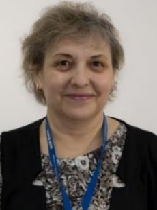
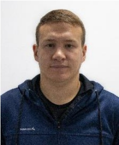
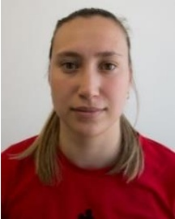
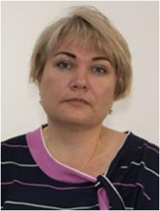
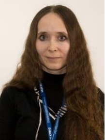
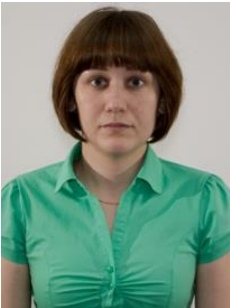
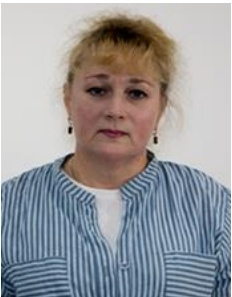
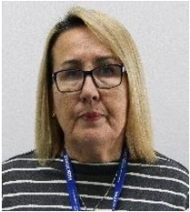
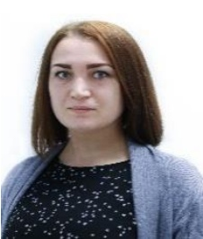
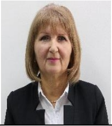

| ФИО | Предмет | Стаж общий / техникум | Образование | |
|---|---|---|---|---|
|  | 1. Основы безопасности жизнедеятельности 2. Безопасность жизнедеятельности | 34,7 / 29,8 | Казанский государственный университет им. В.И.Ульянова – Ленина; История; Историк; 1992 г. | |
|  | 1. Физическая культура | 11,1 / 0,7 | ГАОУ СПО «Арский педагогический колледж имени Габдуллы Тукая» 2015 | |
|  | 1. Физическая культура | 2,2 / 2,2 | ФГБОУ ВО «Поволжская государственная академия физической культуры, спорта и туризма» 2017 | |
|  | 1. Химия | 20,1 / 16,1 | Казанский государственный технологический университет; Химическая технология и биотехнология; Магистр техники и технологии; 2002 г. Казанский государственный технологический университет; Педагогика высшей школы; 2002 г. | |
| 1. Математика | 4,1 / 1,1 | ФГАОУ ВПО «Казанский (Приволжский) федеральный университет»; Учитель физики и информатики; Специальность «Физика с дополнительной специальностью»; 2015 г. Переподготовка: ФГАОУ ВПО «Казанский (Приволжский) федеральный университет»; Математика; 2017 г | ||
|  | 1. История | 12,4 / 4,0 | Казанский государственный педагогический университет Набережно-челнинский филиал; История; Учитель истории; 2003г | |
|  | 1. Русский язык 2. Литература | 4,1 / 4,1 | ФГБОУ ВПО «Башкирский государственный педагогический университет им.М.Акмуллы»; «Родной язык и литература с дополнительной специальностью Русский язык»; Учитель татарского языка, литературы и русского языка, литературы; 2014 г. ФГБОУ ВПО «Башкирский государственный педагогический университет им.М.Акмуллы»; Педагогическое образование. Магистр. 2016 г. | |
|  | 1. Физика | 26,10 / 16,1 | Казанский авиационный институт им.А.Н.Туполева; Аэродинамика и термодинамика; Инженер-физик; 1989г. | |
|  | 1. Иностранный язык (английский) | 41,6 / 1,2 | Туркменский государственный педагогический институт имени В.И. Ленина; Учитель истории и английского языка средней школы; 1977г. | |
|  | 1. Информатика 2. Информационные технологии | 7,11 / 1,0 | ГОУ ВПО «Елабужский государственный педагогический университет»; Учитель физики и информатики; Специальность «Физика с дополнительной специальностью «Информатика»; 2011 г. | |
|  | 1. Родной язык | 29,5 / 1,4 | Казанский государственный университет имени В.И.Ульянова-Ленина; Журналистика; Журналист; 1987 г. |